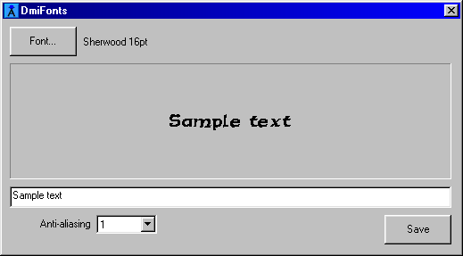
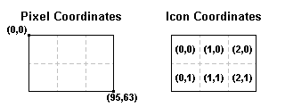

A utility/library combo for BYOND by Lummox JR
Version 2.5For some time now, BYOND has had libraries to add text to items on the game map, but to date support for variable-width fonts or easy font creation has been lacking. (Skysaw's Kwijibo is an exception, but he had to create the fonts by hand and there's no library to use them in other games.) Although text on the map is likely to be a feature in BYOND 4.0, I hope that this library will be useful until then, and afterwards for things that the coming system won't be able to handle.
This library comes with a Windows utility, written in Visual C++. The purpose of the program is to create a font.dm code file and a font.dmi icon file to go with it, which can be compiled into your programs and used easily. You will need a pair of files for every font and style you want to use. Pick a font face, point size, bold or italic, and decide what level of anti-aliasing you want to use.
|  |
| Figure 1: The DmiFonts program. Creating a font for use in DM is as easy as selecting a font and size and clicking Save. |
Press the Font button to select a font, which will then be displayed in the window below. You can choose what to display as sample text, to decide better which font you'd prefer to use before creating any files. After choosing an anti-alasing level, press Save to create the files for your font. Then move the files to your project, and you can start using them.
The program is capable of saving different font scripts, so a font that supports Greek characters can be saved in a Greek version. (DM doesn't support Unicode, and generic Win32 doesn't support it well.)
You're likely to find for italic fonts that the overhang var has not been set; it should be, for italics. When Windows italicizes many fonts the overhang isn't set correctly. If there is no overhang, the utility will make a guess at a good value but will not fill it in for you.
Anti-aliasing determines how "smooth" your font appears. There can be advantages as well as drawbacks to using this technique. To anti-alias a font, the utility blows it up a certain number of times, then scales it down using shades of gray. A non-antialiased font will just be black-and-white, and is good for places where you want just text with a transparent background. The more anti-aliasing you use, the more shades of gray you get. A heavily anti-aliased font will try to show more detail, but at the same time it might make your text too fuzzy to read if you use a small point size.
The number in the box you select determines how many times to scale up the font for anti-aliasing. If you select 4, then the font is blown up to 4× its width and height, then scaled back down into 17 shades of gray (including black and white). The number of gray shades you get is n2+1, where n is the scaling factor. You can only go as high as 256 shades at most, if you pick n=16.
The library consists of two datums which are used to draw the text. The /dmifont datum defines the font's properties, including the size of the characters and their widths. It can be used both for drawing text and measuring. The /iconset datum is a list of icons arranged in a grid that take text output and can manipulate it for you.
DM's lack of support for images larger than 32×32 is a big problem for the library, so my solution was to work around it by creating a new datum. An /iconset acts like a larger image by using a lot of individual icons. When you're ready to use them, you can assign the icons to atoms on the map.
|  |
| Figure 2: The layout of a 96×64-pixel /iconset. In this set, w=3 and h=2. |
It's important to understand the coordinate system used by an /iconset because you'll need it to get at any text you draw with the library. If you want to draw text at the very upper left, for example, you'd draw it at position (0,0). If you want to draw text exactly centered, you have to use (16-width/2,16-height/2). You can find the width of your text using the dmifont.GetWidth(text) proc, and the height from dmifont.CountLines(text) * dmifont.height. There's a little more to it than that, but that will be covered later.
Once text has been drawn, the icons in the set can be assigned to atoms. You can tell how many icons are in the set by checking the w (width) and h (height) vars. They're not actually named width and height so as not to confuse them with pixel measurements; w and h are measured in icons. Here's a quick example that uses an /iconset only one icon high, but arbitrarily wide.
obj/killcounter
screen_loc = "SOUTHEAST"
New(client/C)
C.screen += src
Update(C.mob.kills)
proc/Update(kills)
var/iconset/s = font.DrawText(...) // we'll get back to this
// make the background transparent instead of black
s.Transparent()
overlays = list()
var/obj/O = new/obj
O.layer = 10
for(var/i = 0, i < s.w, ++i)
var/icon/ic = s.GetIcon(i, 0)
if(ic)
O.pixel_x = (i - s.w + 1) * 32
O.icon = ic
overlays += O
The call to DrawText() will be explained in the next section. For now, what you need to know is this: When an /iconset is created, by default it uses black icons. (There are reasons for that, but they're too technical to bother with.) The text drawn by DrawText() is white on black. To give it a transparent background, you'd call Transparent() to change it; by default that will change black to transparent in the icon, but you can also call it with RGB values like Transparent(255, 0, 0).
The GetIcon() proc uses the icon coordinate system shown above, where (0,0) is the upper left icon. So s.GetIcon(0, 0) will give you the icon on the far left, and s.GetIcon(s.w - 1, 0) returns the one on the far right. Just to show how it would be done, here's how that loop would look if the /iconset could be more than one icon high:
for(var/j = 0, j < s.h, ++j)
O.pixel_y = (s.h - j - 1) * 32
for(var/i = 0, i < s.w, ++i)
var/icon/ic = s.GetIcon(i, 0)
if(ic)
O.pixel_x = (i - s.w + 1) * 32
O.icon = ic
overlays += O
Since text created by DmiFonts defaults to white on a black background, you'll often want to change it. To change the background to transparent, you can use the Transparent() proc described above. That isn't going to work well for an anti-aliased font, because of all the shades of dark gray; those are places that are supposed to show more background than text, but BYOND doesn't support partial transparency. If you want your text to appear with a transparent background, avoid anti-aliasing.
To change the foreground color, you can use the Blend() proc. This works just like icon/Blend(), but for every icon in the set. So you can color in text using ICON_MULTIPLY.
// make text red-on-black instead of white-on-black iconset.Blend(rgb(255, 0, 0), ICON_MULTIPLY)
If you only want black-on-white text, you can use Invert() to negate all the colors in the set. Or, you can subtract the icons from other icons that are mostly white, like a speech bubble.
You can also outline text using the Dilate() proc, which takes the white parts of the /iconset and "expands" them. Sometimes the foreground color you want may not mesh well with the background, or you might not know in advance what color the background will be. So if you dilate a copy of some text, you can subtract the original text from it to get black text with a white outline. Or you can invert the dilated image, multiply it by your background, and add text on top. There are many possibilities.
Once you've run the program and created the .dm and .dmi files for a font, and copied those fonts over to your project directory, you can use them. First, click the checkbox on yourfont.dm to make sure it compiles with your project. Now open it up. You'll see something a lot like this.
dmifont/ArialBold7pt_AA16
name = "Arial Bold 7pt (AA 16)"
height = 11
ascent = 9
descent = 2
avgwidth = 5
maxwidth = 24
overhang = 0
inleading = 2
exleading = 0
defchar = 31
start = 31
end = 255
antialias = 16
metrics = list(\
1, 4, 1, /* char 31 */ \
0, 0, 2, /* char 32 */ \
...
0, 5, 0, /* char 255 */ \
225)
defined = list(\
null, null, ... null,\
...
".", "/", "0", "1", "2", "3", "4", "5", "6", "7", "8", "9", ":", ";", "<",\
... )
icon = 'ArialBold7pt_AA16.dmi'
The program has gone ahead and filled in all the values needed to use this font. So the first step to use the font in your own game is to initialize it.
var/dmifont/ArialBold7pt_AA16/tinyfont = new
Besides all the vars you can use like height, there are several important procs. GetWidth() will give you the width of a line of text, or the longest width of more than one line. CountLines() will tell you how many lines you have, where each line is separated by a \n newline character.
That's almost enough for very crude text output, so let's go back to that kill counter example. I'd like to make the text right-aligned to the screen, and drawn at the very bottom.
obj/killcounter
proc/Update(kills)
var/txt = "[kills] kill\s"
var/size = font.RoundUp32(font.GetWidth(txt))
var/iconset/s = font.DrawText(txt, size, 32 - font.height,\
flags = DF_JUSTIFY_RIGHT, icons_y = 1)
First, it's important to know just how big an /iconset will be needed to draw this text, so RoundUp32() will take the value of font.GetWidth(txt) and round it up to a multiple of 32 pixels: the size of an icon. So if the text is, say, 81 pixels wide, the next highest multiple of 32 is 96, which is 96÷32 = 3 icons wide.
Now in DrawText(), the size, 32 - font.height portion looks simple enough: Those are the coordinates where the text should be drawn. Since it's right-aligned, text will be drawn out to the left of those coordinates. But it's still drawn downward. 32 is the y coordinate just past the bottom edge of the /iconset, so going up by font.height, subtracting it from 32, will draw text as low down as it can go. (Actually you can draw even lower. If you don't use any descending characters like a lowercase y, just subtract font.ascent instead.)
The two arguments that may not look as clear are flags and icons_y. In flags you can specify options for word wrapping and justification; this text is right-justified, so it uses the flag DF_JUSTIFY_RIGHT. The icons_y var is a limit for how many icons to use when creating the /iconset; if you don't give it a limit it will expand as far as the text. Since the example only calls for one icon's worth of height, icons_y is set to 1. There's also an icons_x if you want to limit the width, too--but text will try to draw itself right on past that.
You can constrain text even further using the width argument, and maxlines. Text will then wrap words to try to fit within the limits you demand. Depending on the flags you use, it may just cut off when it runs out of room, or it may trail off in an ellipsis (...) instead.
var/iconset/s = font.DrawText(mylifestory, 0, 0, width = 160, maxlines = 10,\
flags = DF_WRAP_ELLIPSIS)
Some life stories are shorter than others, but you'd probably see your text cut off on the 10th line with an ellipsis after it. If you wanted to show the rest of it later, and need to know where you left off, send a list (it must already be initialized) to the proc as leftover.
var/list/nexttext = new
var/iconset/s = font.DrawText(mylifestory, 0, 0, width = 160, maxlines = 10,\
flags = DF_WRAP_ELLIPSIS, leftover = nexttext)
The list will come back either empty, or with a string starting on the 11th line of mylifestory.
You can also indent your text using firstline. If you set that to 10, DrawText() will indent the first line by 10 pixels. Or you can use it for hanging indents, by making it a negative value. (Note: If you use a negative firstline, the first line is allowed to be even wider than width by that amount. If firstline=-20, the first line may be 20 pixels wider than the others.)
Often it's helpful to preformat text before sending it to DrawText(). That way you can know just how wide it will be when formatted, or how many lines it will have. To do that, use the GetLines() proc. It's practically the same as DrawText(), but it leaves out anything related to the drawing itself like the x,y coordinates, icons_x and icons_y, etc. It returns a string, broken up into lines with \n where DrawText() would have broken it up. Using GetWidth() and CountLines() on the result can help you fine-tune where you want to put everything before you draw it. If you use GetLines() to preformat your text, you can also use the DF_NO_FORMAT flag in DrawText() to speed up drawing.
Word wrapping is done at the best possible places: at a space if one is handy, or at a forced line break (\n). If no break is available, a word will be split up just before reaching the maximum width and continued on the next line. However you may want to provide break points of your own, such as after a hyphen. Any character with an ASCII value under 10 is considered a "soft break". The character won't display normally, but will allow text to be broken up at that point.
The tab character \t is a soft break character; in ASCII it's 9. A good place to use it would be at the end of punctuation, if for some reason no space was put there, or after a hyphen. Another soft break is ASCII 8, the "hyphen break". (In the C language, ASCII 8 is \b for backspace, but in DM it has no equivalent and there's no easy way to add it to a string except by using ascii2text(8). Sorry.) The hyphen break will insert a hyphen if it's used as a soft break (and will only allow the word to be broken there if a hyphen fits).
In version 2, spacers were added for text justification. ASCII characters 1 through 7 are justification characters, representing 1 through 7 pixels of extra padding. Do not rely on these remaining constant, however, as new soft breaks may be added in the future if necessary.
The uses of this library are limitless. By exploring your options you'll probably discover some unique ideas that no one has even imagined yet. You can make an interface really sparkle, or personalize a game, or make it easier to tell players apart when custom colors or icons just aren't enough.
One idea that appears in the demo is to draw a name beneath each player when the log in. This can make it a lot easier to tell who's who in the thick of a game.
var/dmifont/Arial7pt/namefont = new
mob
Login()
// find the most lines we can fit in 1 icon's height
var/lines = round(32 / namefont.height)
var/txt = namefont.GetLines(key, width = 96, maxlines = lines,\
flags = DF_WRAP_ELLIPSIS)
// find out just how big this has to be
var/size = namefont.RoundUp32(namefont.GetWidth(txt))
var/iconset/s = namefont.DrawText(txt, size / 2, 0,\
width = size, maxlines = lines,\
flags = DF_JUSTIFY_CENTER,\
icons_x = size / 32, icons_y = 1)
s.Transparent() // white text on transparent background
var/obj/O = new
O.pixel_y = -32
overlays = list() // reset overlays
for(var/xx = 0, xx < s.w, ++xx)
var/icon/ic = s.GetIcon(xx, 0)
if(ic)
O.icon = ic
O.pixel_x = (xx + (1 - s.w) / 2) * 32
overlays += O
del(O)
Logout()
overlays = list()
Most names should fit nicely within the limits. Arial at 7 points is 11 pixels high, which is just a fraction too tall to fit 3 lines--so it will fit 2 lines, which is a good amount. There's not much point letting the name get huge, anyway.
You may find that white isn't the ideal color for the label. You can use the techniques discussed earlier to color it in. One quick change is to use s.Invert() after s.Transparent() to change the text to black. And whatever font you use, you shouldn't do any anti-aliasing. About the only way you can get that to look good is to use Dilate() to create an outline, then force the outline to a solid color.
s.Transparent() var/iconset/original = new(s) s.Dilate() s.Blend(rgb(255, 255, 255), ICON_SUBTRACT) // change to black-on-transparent s.AddSet(original)
As of version 2.5 you can now also use QuickName() easily create the same overlays.
I'll have more examples in a future version of this documentation.
You may include these in your main .dme file, outside the BEGIN and END lines.
Draw text at position x,y in an /iconset. x is the distance from the left edge, and y is from the top. The coordinates are for the upper left edge of the text. (If you want to draw from the baseline, subtract ascent from y.) The drawing area is an /iconset datum returned by this proc. Text is white on a black background, but you can change it using the procs in /iconset.
If you specify icons_x or icons_y you can restrict the /iconset to a particular size (in icons, not pixels), or it will expand to fit the text.
The width argument is the maximum width you will allow for your text, or -1 (the default) for as much width as possible. You can also use firstline to specify an indentation for the first line.
You can limit text to a number of lines with maxlines, or leave maxlines set to -1 for unlimited lines.
The flags argument allows you to decide how you want your text wrapped or justified. Possible flag values are:
By adding flag values together or using the | operator on them, you can use different combinations of word wrapping and justification.
The drawover var is an /iconset to draw on top of. This may be preferable to creating a new /iconset and adding it to another one.
If you supply a list for leftover, it will be cleared out and filled with the rest of the text (if any) that didn't get drawn. If its length is 0 afterward, all of the text could be drawn to the constraints specified.
Draws a block of text in changing fonts. Most of the arguments are the same as in DrawText(), except for a few:
items is a list of text and fonts to draw, starting in this font (src). The proc will run down through the list and draw text or change fonts as requested. If a font is found, that font is used for subsequent text. If null is found, src becomes the default font again. An items list might look like this:
list("This is ", boldfont, "bold", null, " text!")
The items var can also be given a /dmifonttextline datum, for those crazy enough to work with it manually.
maxheight is the maximum height of all lines. Since the fonts may vary in size, maxlines wouldn't be appropriate.
If you supply a list for leftover, it will be cleared out and filled with items from the items list that didn't get drawn. The list can be used for a future call to this proc to display the rest.
This is a set of icons arranged in a grid. It serves as a "virtual image". In the coordinate system for the image, (0,0) is the pixel in the upper left corner, and (w*32-1,h*32-1) is the lower right. Each individual icon also has a coordinate, where (w-1,h-1) is the lower right icon. Some of the /icon datums in the set may actually be null, or may become null if they become totally transparent, so be sure to check for null icons before you use them.